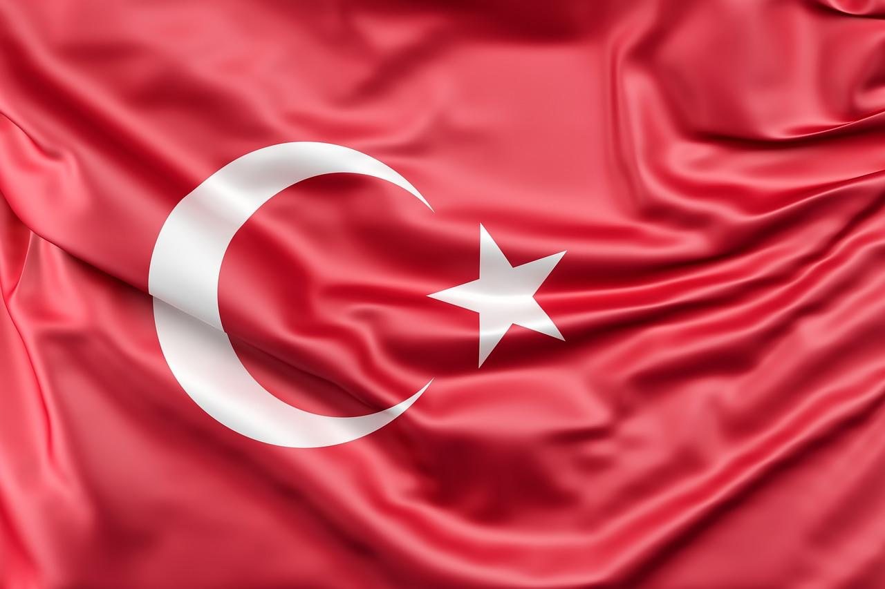

Milli Kahramanlarımız
Bize bu güzel vatanı korumayı görev olarak bırakan kahramanlarımız.
Mustafa Kemal Atatürk
|
İsmet İnönü
|
Fevzi Çakmak
|
Kazım Karabekir
|
Halide Edip Adıvar
|
Kadın Kahramanlarımız

VE NİCE KAHRAMANLARIMIZ